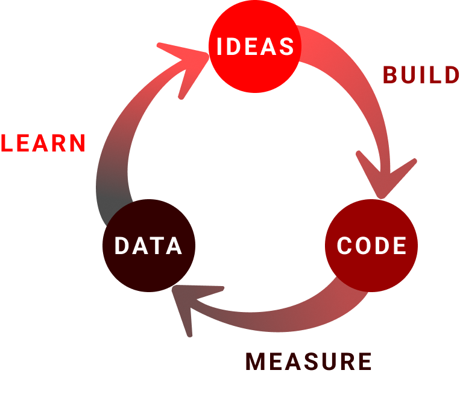

Lean Startup
What is it?
A framework to help derisk the launch and subsequent iterations of your product by starting small and measuring everything. The methodology was popularized by Eric Ries in his book Lean Startup, but the principles he pulls from date back to the Lean Manufacturing movement and encompass delivering quickly, eliminating waste, sharing knowledge, optimizing the entire system, prioritizing quality, and respecting others.
The two core practices arising from Lean Startup are 1) define a Minimum Viable Product (MVP) and 2) measure, learn, iterate (sometimes also called build, measure, learn)
Why do it?
Find Value Quickly
The world is full of good ideas and problems to solve, but the majority of products are not successful. Failure is a welcome part of the development process, but only if your team understands why. Lean Startup is designed around failing fast and iterating on what you’ve learned: find the simplest and cheapest way to test your hypothesis, get it in front of some people, and measure the impact. Rinse and repeat.
Validate Present State
Everything built should move the team closer to its stated goals, but simply having the intent to achieve outcomes will not automatically do so. Oftentimes users’ responses to using features in production can differ greatly from what they may have told you during an interview or prototype test, so it is important to confirm if you have succeeded versus assuming you have.
Inform the Future
Measuring the success of what the team builds is critical to helping decide what to focus on next. If you shipped a feature that is not meeting the intended outcome, the team needs to know whether to double down on that approach and build more features to achieve the outcome, or pivot to a different strategy.
Build Trust
Any time spent building software costs time and money, so having data to justify your decisions is essential to building trust among your users and stakeholders. Users will lose interest in your product if you continually ship them features that do not solve their pains or improve their experience, and stakeholders will stop funding and/or evangelizing your product if you are spending time and money building features but cannot demonstrate why. Especially in the DoD space where products do not have as much direct financial feedback from an open market, trust needs to remain high to avoid sudden funding cuts.

Who’s involved?
This is a full team practice but is primarily spearheaded by Product Managers and Designers.
When to do it?
Every time a new idea is born. This is an ongoing process and is only considered “finished” when the product or feature has obtained satisfactory metrics to achieve the desired outcome.
How to do it?
- Have a hypothesis: Write down your hypothesis of how you expect a product or feature to contribute to your desired outcome(s) before you begin an experiment so you can objectively measure against it later and avoid confirmation bias.
- Pick feasible metrics with baselines: A common pitfall of trying to measure outcomes is choosing metrics that are extremely complex to track, especially in high compliance organizations like the DoD with strict security and privacy controls. Work with your team to get a sense of what you can actually measure and ensure you have the proper tooling in place before you get too far into the build process. It is also important to have a baseline to compare against, otherwise your data is subjective.
- Keep intervals small: The quicker your feedback loops are, the less risk you run of wasting resources on features that may not achieve your desired outcome. When defining an MVP**, think about the lowest possible cost/effort way to test your hypothesis. Eric Ries defines it as “that version of a new product which allows a team to collect the maximum amount of validated learning about customers with the least effort.” Don’t be afraid to get scrappy - it is better to learn from a non-polished product than it is to spend time making a useless feature look fancy.
- Validate in production: Conducting interviews and prototype sessions with users is enormously valuable for informing your hypothesis, but production usage is the ultimate validator. You may find that nobody actually uses a feature in production despite telling you it would be valuable during an interview.
- Use data to inform decisions: If you have established baselines and picked metrics that can be feasibly collected, it should be easy to measure how the results compare to the baselines. Look at the level of impact and determine if it is satisfactory or requires another iteration to be more meaningful.
- Don’t let perfection be the enemy of good: Setting clear success criteria helps you exit the feedback loop when you have gathered just enough information to make a decision. You may learn you were completely wrong with your hypothesis, so don’t be afraid to pivot to something entirely different. Also keep in mind that optimizing for incremental value often leads to diminishing returns. If you kept your loops small you will have learned something valuable for relatively little cost which is always a success in itself.
**A word of caution: the term “MVP” has become loaded, especially in the DoD space. We use it here to reference what it is meant to represent: the smallest thing you can possibly deliver that still adds value. Many DoD stakeholders have been known to camouflage lengthy requirements lists under the umbrella of an MVP. Understand your stakeholders and maybe consider using a different term - the meaning is what matters, not the acronym.
Relevant Links
- Lean Startup by Eric Reis